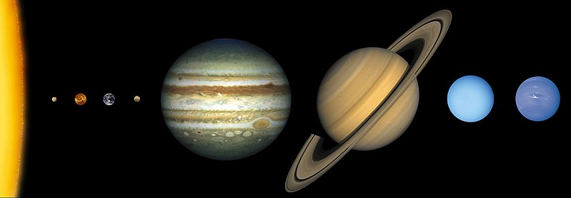

Солнечная система
Со́лнечная систе́ма — планетная система, включающая в себя центральную звезду Солнце и все естественные космические объекты на гелиоцентрических орбитах. Она сформировалась путём гравитационного сжатия газопылевого облака примерно 4,57 млрд лет назад.Общая масса Солнечной системы составляет около 1,0014 M☉. Бо́льшая часть её приходится на Солнце; оставшаяся часть практически полностью содержится в восьми отдалённых друг от друга планетах, имеющих близкие к круговым орбиты, лежащие почти в одной плоскости — плоскости эклиптики. Из-за этого наблюдается противоречащее ожидаемому распределение момента импульса между Солнцем и планетами (так называемая «проблема моментов»): всего 2 % общего момента системы приходится на долю Солнца, масса которого в ~740 раз больше общей массы планет, а остальные 98 % — на ~0,001 общей массы Солнечной системы.
Четыре ближайшие к Солнцу планеты, называемые планетами земной группы, — Меркурий, Венера, Земля и Марс — состоят в основном из силикатов и металлов. Четыре более удалённые от Солнца планеты, называемые планетами-гигантами, — Юпитер, Сатурн, Уран и Нептун — намного более массивны, чем планеты земной группы. Крупнейшие планеты-гиганты, входящие в состав Солнечной системы, — Юпитер и Сатурн — состоят главным образом из водорода и гелия и поэтому относятся к газовым гигантам; меньшие планеты-гиганты — Уран и Нептун — помимо водорода и гелия, преимущественно содержат воду, метан и аммиак, такие планеты выделяются в отдельный класс «ледяных гигантов». Шесть планет из восьми и четыре карликовые планеты имеют естественные спутники. Юпитер, Сатурн, Уран и Нептун окружены кольцами пыли и других частиц.
В Солнечной системе существуют две области, заполненные малыми телами. Пояс астероидов, находящийся между Марсом и Юпитером, схож по составу с планетами земной группы, поскольку состоит из силикатов и металлов. Крупнейшими объектами пояса астероидов являются карликовая планета Церера и астероиды Паллада, Веста и Гигея. За орбитой Нептуна располагаются транснептуновые объекты, состоящие из замёрзшей воды, аммиака и метана, крупнейшими из которых являются Плутон, Хаумеа, Макемаке, Квавар, Орк, Эрида и Седна. В Солнечной системе существуют и другие популяции малых тел, такие как планетные квазиспутники и троянцы, околоземные астероиды, кентавры, дамоклоиды, а также перемещающиеся по системе кометы, метеороиды и космическая пыль.
Солнечный ветер (поток плазмы от Солнца) создаёт пузырь в межзвёздной среде, называемый гелиосферой, который простирается до края рассеянного диска. Гипотетическое облако Оорта, служащее источником долгопериодических комет, может простираться на расстояние примерно в тысячу раз дальше гелиосферы.
Солнечная система входит в состав структуры галактики Млечный Путь.